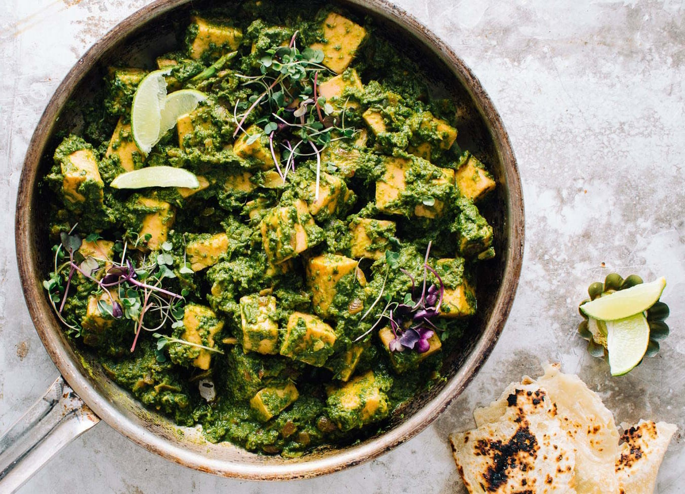

приготовление:
-
Если будет подаваться с картошкой — поставить вариться картошку, если с рисом — рис.
-
Залить кипятком 160 гр. шпината в отдельной миске на пару минут. Переложить в холодную, лучше ледяную воду, чтобы оставить его яркость.
-
Почистить и порезать не слишком мелко, так как пойдет в блендер, следующие ингредиенты: луковица (125 гр), помидор (75 гр), чеснок — 7-8 зубчиков, имбирь — 10 гр, зеленый чили. Разогреть сковороду с маслом, покрывающим все дно. Обжарить вышеперечисленные овощи, закрыв крышкой, минуты 2. Снять с огня, дать чуть остыть. Измельчить зажарку с 2 ст.л. воды и шпинатом до консистенции густой сметаны.
-
Поставить сковороду на средний огонь (6), налить масло, порезать панир на 15 кусочков, обжарить с двух сторон до румяных бочков. Снять панир со сковороды.
-
На эту же сковороду на огонь поменьше (4) поставить обжариваться пюрированную массу. Помешивать пару минут, добавить 2/3 сливок (50 мл), увеличить огонь до 6, всыпать специи по 1 ч.л.: соль, порошок чили, по 1/2 ч.л.: кориандр, гарам масала, cumin seeds, куркума. Перемешать, уменьшить огонь (4). Закрыть крышкой, потушить минут 6, пока масло не начнет отслаиваться по краям. Добавить туда же панир и потушить под крышкой все вместе еще пару минут, добавить пару кусочков сливочного масла и оставшиеся сливки (25 мл).
-
Подавать с картошкой или рисом.